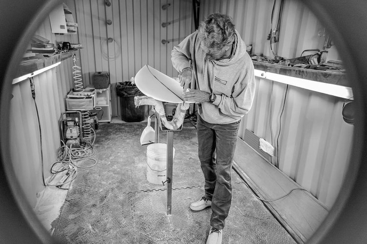
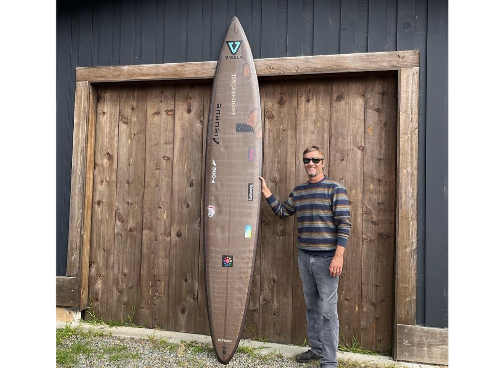
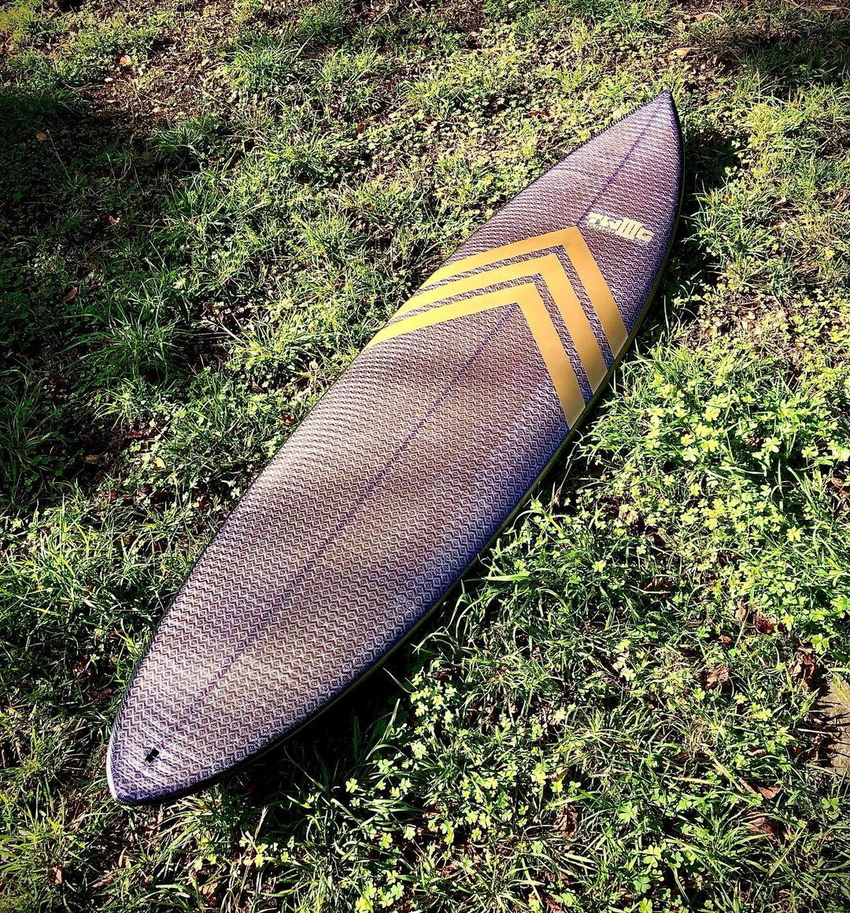
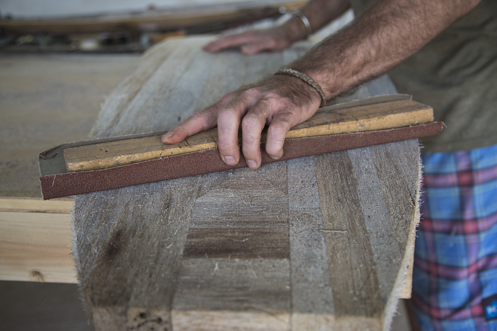
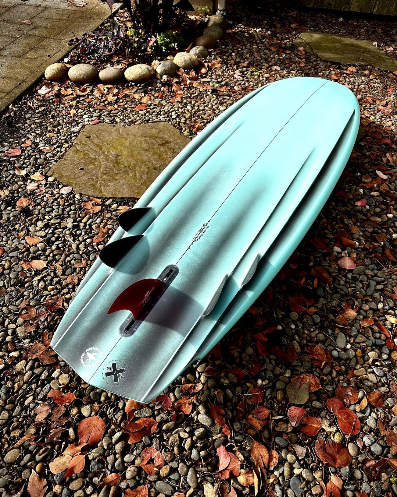
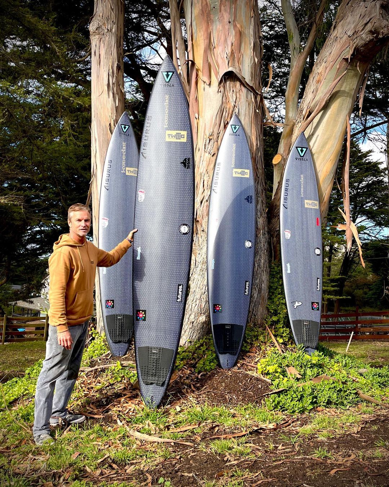

At the age of 18, iconoclast Founder, Mike Wallace, embarked on his journey learning to surf relatively late on Oahu. But he made up for this late start with a vengeance and ended up coaching the high school surf team in Half Moon Bay and also drawn into the art of shaping boards for family and friends. Influenced by renowned figures such as Marc Andreini, George Greenough, and Michel Junod, the pivotal moment to design and shape his first board occurred while he was authoring an “In the Green Room” column for the now-defunct surf blog and forecasting site, Surf Pulse based in San Francisco.
Upon writing an early piece on computer shaping after interviewing Matt Ambrose in Pacifica, Wallace shaped a 5 ’10 fish inspired by a Chris Christenson model. Like a fish taking to water, designing and shaping boards eventually took over his life, and 20 years later, Mike Wallace is now collaborating on edge board guns for 3x-time world surfing champion, Grant “Twiggy” Baker, his customers and other Mavericks chargers such as Wilem Banks and Steve Rice. But his innovations don’t stop here.
Venturing beyond traditional methods, Wallace has expanded his repertoire to encompass alternative materials. His exploration knows no bounds, involving experimentation with diverse elements such as flax-basalt, agave, carbon-innegra, and epoxy bio-resin—just to name a few. Continuously pushing the boundaries of possibility, Mike engages in frequent trials with new glassing layups, resins, blank materials, and 3D innovations to propel the craft to new heights.
This relentless pursuit of innovation extends to a variety of elements, from bio-blanks like Polyola and Grow Blanks agave to protective shells crafted from flax and basalt. Enthused by the plethora of options and supported by team riders like Twiggy, who share his enthusiasm for change and seek advantages in improved properties, Wallace constantly seeks to combine fresh and innovative options for walking on water.
Looking forward, Mike aspires to collaborate with SwellCycle on the development of 3D printed boards, utilizing recycled plastic hospital trays in a fully closed-loop manufacturing process. Simultaneously, he remains committed to supporting local shapers and builders in his community, creating a network that fosters growth and sustainability within the realm of board development.
When we came across iconoclast and Mike Wallace’s natural talent for shaping combined with his passion for alternative eco-friendly materials, we knew we needed him to be a part of The ECOBOARD Project.
“I view the Ecoboard Project as a responsibility to our earth and the next generation. The key for me is that the exercise is not just about the materials for the sake of clumsy eco-friendliness, but that the economics and business proposition are valid. For example, the design should be as advanced as the raw materials, resulting in improved performance at a comparable price point (give or take) … that’s the true gold standard.”
We’ve been fortunate to supply the Polyola blank Mike Wallace used in the “Best in Show” competition at the Boardroom Show to create a new Edge-Bonzer design. Wallace explains, “Without Sustainable Surf/SeaTrees, I wouldn’t have otherwise had access to such a blank. I feel as if I’m part of a collective of like-minded shapers seeking to innovate and improve our lot and move up the food chain to more enlightened practices.”
The purpose for eco-friendly boards for Wallace lied with curiosity. After noticing a few shapers using flax on-deck inlays, such as Ashley Lloyd and Gary McNeill, Mike was curious how the boards held up and performed. It wouldn’t be long before he played an impactful role in moving the needle of using alternative materials to build and shape boards.
Fortunate to meet Dave Rastavich in Australia, he showed Wallace a fish by Gary he’d been surfing for over 5-years that was worn but still intact. Along his journey in Australia, Wallace also made friends with Grant Newby, an incredible board designer and Eco-builder who connected him with key suppliers of eco materials in Australia, who were 5 to 10 years ahead of anyone stateside. These key suppliers included Sanded Australia and Colan Australia, which were pivotal in Wallace’s journey into shaping Twig’s most advanced guns to-date. This also gave him a couple years’ leg up ahead of the major brands, many of whom have just now begun to adopt basalt and other alternative glass products as part of their lines.
In the future, Mike Wallace envisions putting these innovative boards to the ultimate test—braving the heat of battle in the most challenging conditions. His aspiration is to demonstrate their prowess and durability in the crucible of the most extreme surf conditions. As such, he shapes performance, tow, and gun models for Twig Surfboard Designs in N. America. Twig has fully embraced the Ecoboard program with his Mavericks quiver. Consulting directly with Greenough and Marc Andreini, Twig’s edge guns have been refined to deliver more drive, speed, and control.
This is achieved through a smaller inboard template bounded by a lip that surrounds deep single- to double-concaves, outside of which are concave rails on the bottom and soft perimeter. This allows the gun to lift up on the inner planing surface and reduce drag, while the soft outside rail maintains power steering-like control. Grant “Twiggy” Baker won the ‘Biggest Wave’ category of the Mavericks Surf Awards during a 20-wave session in March 2022 on a 10’ Twig-iconoclast ‘Eco Warrior’ gun and has been testing the edge design in Nazare, Portugal, and Sunset Beach, Hawaii. He even rode a 10’ edge gun shaped by Jeff Bushman during the Eddie Aikau at Waimea.
When asked for the inspiration behind his work, Mike Wallace is continually fired up by customers who are seeking a different sensation in the water and trust him with their recreation goals and to provide him with honest answers. Feedback from his customers is invaluable and tops up the Stoke-o-meter; “it has always been the true currency of shapers, closest thing to being Santa Claus” as Wallace puts it.